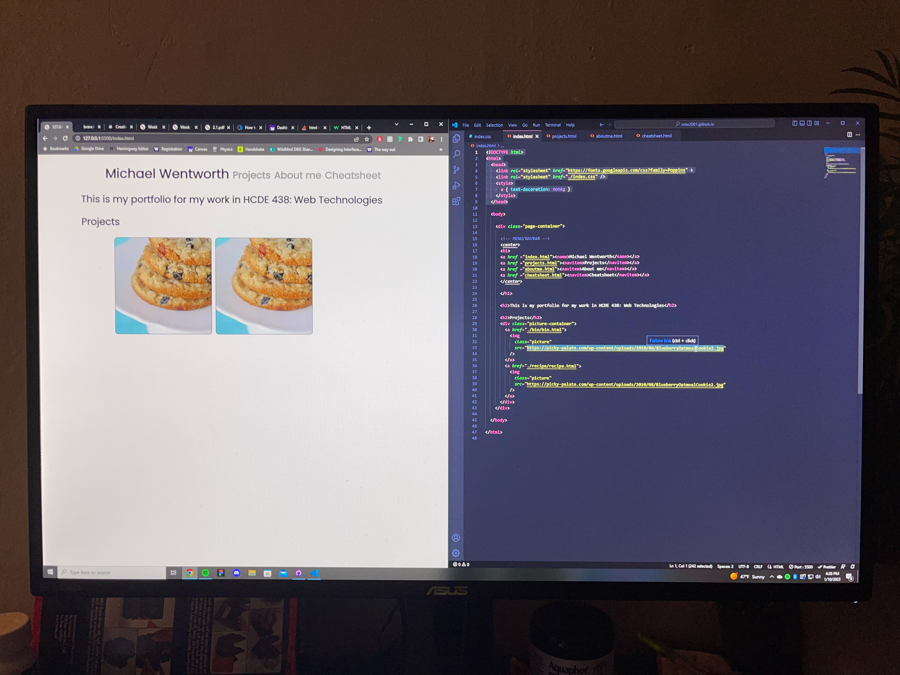
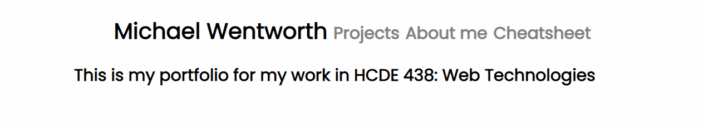

Creating this website was the first mini-project for the course. This website was created
using HTML and CSS, with plans to implement Javascript in the future.
Step 1:
The site began with a very bare-bones HTML site provided by the instructor. From this,
I began by changing the font to "Poppins", which is one of my personal favorites and
is a font that I use on my own design portfolio.
Step 2:
Next, I created the navigation bar at the top of the page using some CSS transitions.
For this, I made each menu item grey, with a hover color of black. When within a certain
page, the navigation bar will continue to show that menu item in black. Clicking on my
name will return the user to the main page of the site.

Step 3:
After this, I spent a significant amount of time organizing my site's various folders to
be formatted correctly. I had to resolve the issue of the navigation bar breaking when
being copied over to a new HTML page within my site due to directory issues. This
required the use of ".." multiple times to refer to different files and pages. Once I
squared this issue away, I began adding content to each of my pages, which was rather
straight forward with just some simple HTML.
1. The first issue that I encountered was pushing my site to Github and having it
appear live at the domain. This was largely due to some user error in how I set up
my Github assets and was quickly resolved.
2. My second issue arose when creating the navigation bar at the top. Certain pages
weren't linking to each other. This was because of directory issues in my HTML code
that were created when I copied the navigation bar code to each different page. This
was solved through some research into directories using ".." to refer to the parent
directory of a folder.
The CSS transition that I chose to implement for my site is changing the color of
the navigation bar text when a user hovers over each. I chose this feature
because it easily conveys to the user that the menu items are clickable and it
will provide an indication of which subpage the user is viewing. This was
implemented by creating a navigation bar item in my CSS style document that has
a different color for default and hover states.

1. Add light/dark mode to the site through Javascript
2. Explore more styling with CSS and Javascript
4. Potentially expand this framework to fully code my own portfolio and move
away from using Wix for my portfolio.